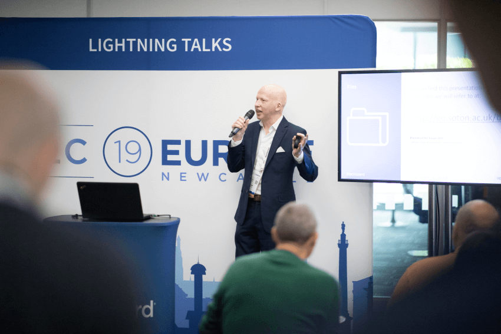

About
I've been working in various educational technology roles at the University of Southampton for more than twenty years. I focussed on rolling out "Blackboard", our institutional Virtual Learning Environment (VLE). While I had a basic awareness of digital accessibility, when I learned about The Public Sector Bodies (Websites and Mobile Applications) (No. 2) Accessibility Regulations in 2018 I understood that I would need to learn a lot more. The VLE is arguably the most vital online service at a University and I realised I would be expected to understand how these regulations would apply.
Through studying the legislation and the accessibility guidelines I had an opportunity to apply this knowledge in practical terms when we introdcued a new responsive theme to the VLE. Talking to colleagues at other Universities I found a common concern was how to make sense of these regulations and how they would apply in practice within our institutions.
I'm continually learning more about accessibility and attempt to share this knowledge in an easy to understand way through delivering presentations, writing blog posts, and other projects. I still have much to learn. In my current role as a Senior Learning Designer I have new opportunities to apply this knowledge.
The best way to get in touch with me is through connecting on LinkedIn. I'm always looking to increase my professional network with others working in this area. I'm also open to questions and am available for speaking engagements.